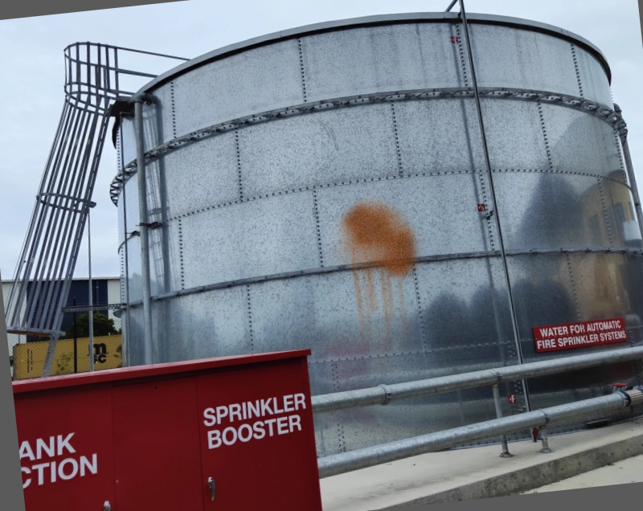
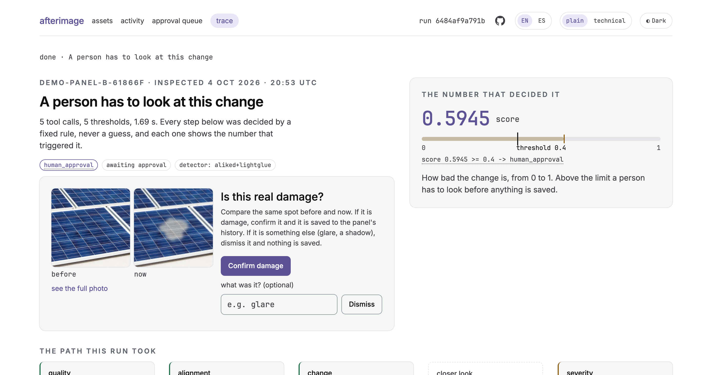

A visual inspection agent that remembers. It aligns every photo to the stored baseline of the same asset with OpenCV 5, and a measured number decides what it does next.
Nobody can look at them all, twice. Every prior winner analysed one frame or one session; none of them remember.


score 0.5945 ≥ 0.4 → human_approval
The card asks “Is this real damage?” and shows the changed spot zoomed, before and now, beside Confirm damage and Dismiss. Nothing is written to memory until someone decides.
Five sample sets in /app walk all four answers with no photo of your own.
Six OpenCV 5 tools over MCP, in an arm64 container on AWS Lambda (Graviton). Memory in DynamoDB and S3. Gemini orders the tool calls and phrases the result; it cannot move a threshold or skip a step. Every decision is a hash-chained trace event: {metric, value, threshold, branch}.
The five failures are published with their root cause. CI fails if a headline figure drifts from a fresh run.
| 30% | Technical execution | OpenCV 5 alignment with ORB fallback, 380 tests, eval gate in CI |
| 20% | Innovation | longitudinal memory per asset; rescans on its own |
| 20% | Real-world impact | solar, metal and concrete inspection |
| 10% | User experience | sample sets, before/now approval, EN/ES, plain/technical, dark |
| 10% | Docs and presentation | technical report, field manual, video |
| 10% | Cloud and responsible ops | Lambda + CloudFormation over OIDC, calibration gate |
| 30% | OpenCV 5 + agent | six OpenCV tools exposed over MCP |
| 25% | Orchestration, autonomy | enforced next tool; the model cannot change a branch |
| 20% | Effectiveness, evaluation | 29 reproducible scenarios, failures published |
| 15% | Failure, trace, human | recapture, refusal, approval gate, hash-chained trace |
| 10% | UX, docs, demo | walk all four answers in a minute |